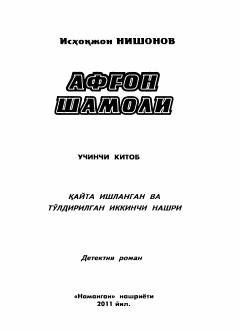

ASVatan himoyachilarining fitnachi kimsalarga qarshi mardona kurashi haqidagi detektiv roman.
Ushbu asar Ishoqjon Nishonovning ko'p jildli detektiv roman-serialining uchinchi qismidir. Kitobda yurtimiz tinchligi va osoyishtaligi yo'lida xizmat qilayotgan vatan o'g'lonlarining fitnachi kimsalarga qarshi olib borgan mardona kurashi tasvirlangan.